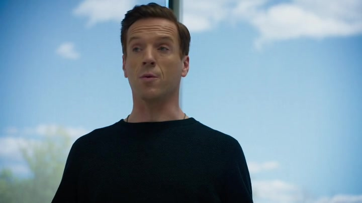

01
Axe Capital / 豪宅新闻之后
买房的胜利，变成客户的担忧

剧情事实Wags 告知阿克斯，Garth Sykes 管理的教师养老金对豪宅头版很不满意，考虑撤回十五亿美元。阿克斯担心消息公开后其他机构跟着撤资，要求留住客户；另一边，查克团队决定从 Decker 的年轻交易员寻找突破。[1][2][3]
这一场为什么重要 · 个人解读
豪宅在上一集证明他能拒绝命令，在这里却成了客户审视他的材料。养老金管理人要对收入远低于基金老板的教师负责，不能只看赚了多少。阿克斯把风险看成连锁赎回，因此首先派 Wags 留人；双方衡量的是同一笔钱的不同责任。
因此 → 公关、赎回与政府调查同时进入他的防守范围。